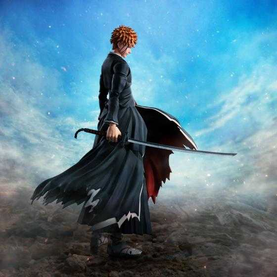
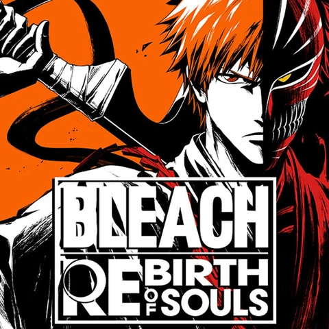
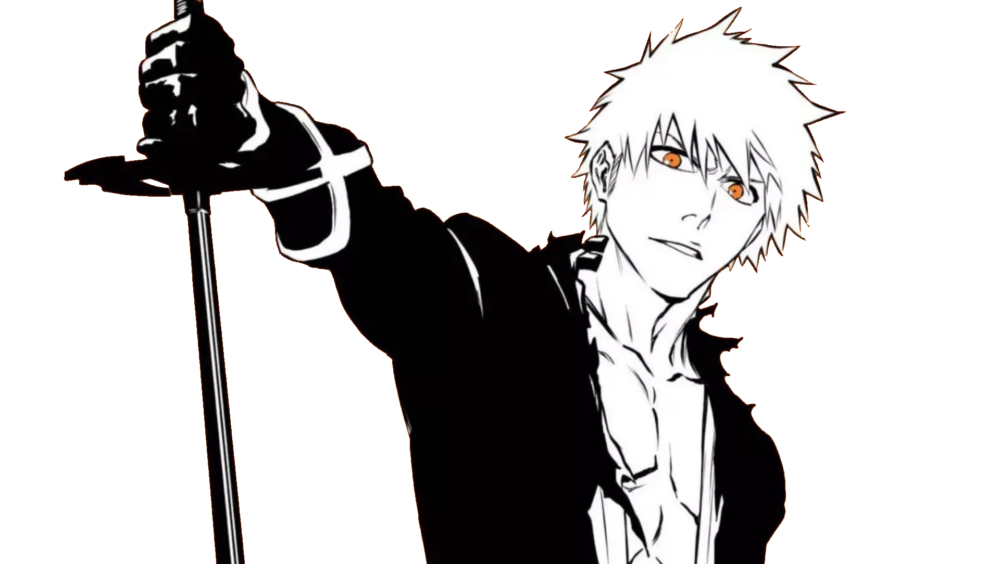

Bleach suit l’histoire d’Ichigo Kurosaki, un lycéen capable de voir les esprits. Sa vie bascule lorsqu’il rencontre Rukia Kuchiki, une Shinigami (dieu de la mort), qui lui transfère ses pouvoirs pour combattre des créatures appelées Hollows. Ichigo devient alors un Shinigami de remplacement et se retrouve mêlé à des conflits spirituels entre les mondes des vivants, des Shinigami et des Arrancars (Hollows évolués). Il découvre peu à peu les secrets de son propre pouvoir et de ses origines. L’histoire s’étend à travers plusieurs arcs, dont la Soul Society, la guerre contre Aizen et l’invasion des Quincies dans l’arc final. Le récit mêle combats épiques, intrigues surnaturelles et quête d'identité.